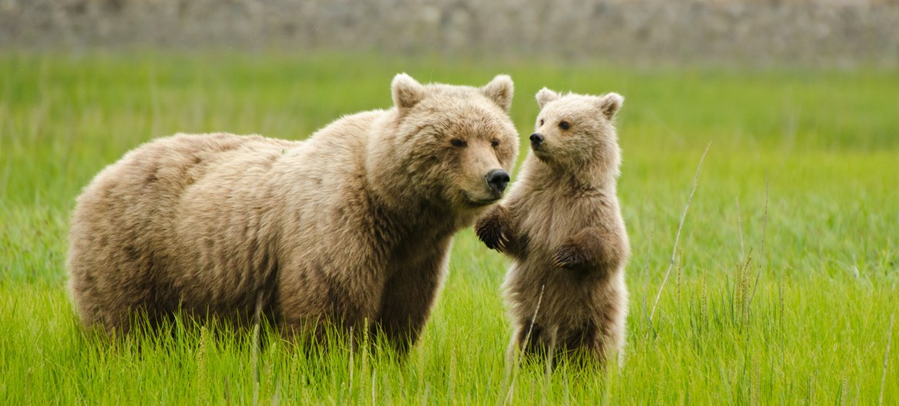
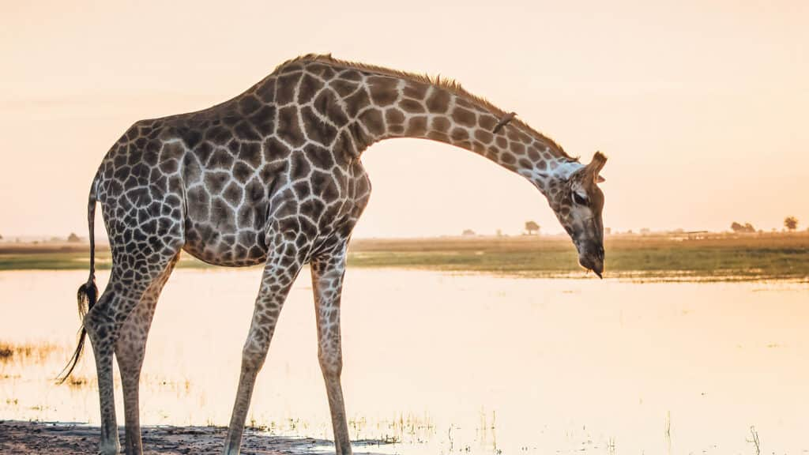
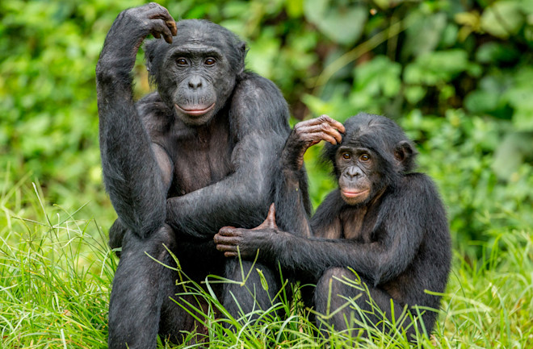
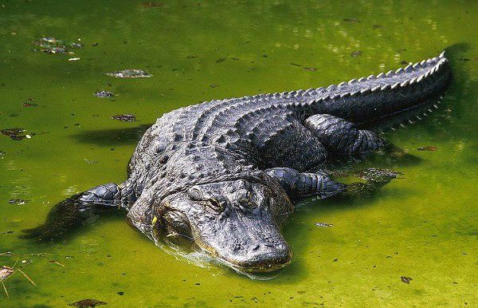

Zoo Animals
Bears

- Ollie
- Mona
Giraffes

- Frankie
- Coconut
Lions
- Mella
- Karl
Monkeys

- Cookie
- Earl
- Banana Pudding
Alligators

- Wren
- Aspen
- Mika
The bear is a mammal and is classified as caniform. Bears eat meat or grass depending on the type. There are diffrent types of bears: polar bear, giant panda, brown bear, black bear, sloth bear. Bears have excellent senses of smell, sight and hearing.
Learn MoreThe giraffe is a large African hoofed mammal. It has extremely long neck and legs, and spotted coat patterns. Giraffes can reach a heights of up to 5.5 meters and sleep only about 4.5 hours per day.
Learn More
The lion is a large cat and is native to Africa and India. Most of the wild lions live in Africa. The male lions have prominent mane and are larger than females. Lions are the only ones to live in social groups called prides. There are hundreds of lions poached each year (about 600 are killed by humans each year). The Ugandan lions are excellent tree-climbers.
git Do not approach or irritate the lions.
The monkey is a mammal and is considred to be intelligent. You can play with them, but be careful. Like humans, monkeys use facial expressions, body language, and sounds to communicate. Also they are social animals that live in groups.
Learn MoreThe alligator is a large reptile that only live in freshwater environments. Alligators have around 80 teeth at a time and can go through 2,000–3,000 teeth in its lifetime. Alligators can stay underwater without air for more than 2 hours. Very dangerous. Do not approach it.
Learn More